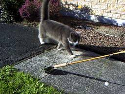
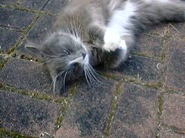

釣行日誌 ＮＺ編
猫を釣る
2002/07/15(MON)
学校の帰りに行きつけの釣具店 Fish City へ行く。先月、タウポ釣行の小物を揃えに寄ったときに、かねてより欲しかったキルウェルのロッド、プレゼンテーション８フィート４番がバーゲン価格で売られていることを発見していたのだ。もう２年ほど、この店に行くたびに手にとって素振りをして、ああ！良いロッドだなぁと思い続けてきたので、むむむむ.....とココロが動かされていた。
あらためて手に取り、じっくりと素振りをしてみると、張りのあるアクション、しかも適度な柔らかさを備えているところは、すでに持っている同じシリーズの６番ロッドと全く同じである。予想していたよりも、少々バット部分の強さは控えめであるが、行きつけの山岳渓流で小さなレインボーと遊んでもらうには十分である。さすがに50cmオーバーの鱒には手こずるであろうが。
『うーん、良い竿ではあるが、いかんせんフトコロが寒すぎる.....』
と、さんざん悩んだ末、店を出るときにはしっかりロッドケースを抱えていた次第。通常価格330NZ$のところ、275NZ$（約16,500円）で購入してしまった。
『このロッドは、オレのところへ来る運命だったんだ.....』
というのが今回の言い訳。こういうセリフは女の子に向かって言うときのために、大切にとっておかなくてはいけませんね。（笑）
家に帰ってさっそくロッドとリールをセットしてみる。ラインを通し、リーダーの先にオレンジ色のインジケーターを付けて、芝生の庭で試し振りとなった。この庭では、ときどき体長約40～50cm、体重約８ポンドの見事な黒猫＋灰色猫が出没するので、ティペットは３Ｘでは心許ないかもしれない。が、嬉しいことに、連中、フライをえり好みしない。
案の定、冬晴れのポカポカ陽気に誘われて、隣家のガレージ前に、グッドコンディションの猫が２尾、昼寝をしている。おまけに、こちらがロッドを組み立てていると、のそのそと近寄ってくるではないか。
『おお、養殖場の虹鱒のようだぞ！ 人影を見ると寄ってくる』

黒猫のココ、メス、３歳と、毛足の長い灰色猫のフラッフィー、オス、２歳は、芝生の上でいまかいまかとフライの落ちてくるのを待ちかまえている。
コートランドの４番ラインを通してヒュンヒュンと数回振った瞬間、
『あぁ～！ 思った以上に軽い竿だぁ』
と感動する。長いリーダーも問題なくターンオーバーできる柔軟性と、必要十分な距離をキャストできる遠投性が兼ね備わっている。ロッドデザイナーの意図が、ひしひしと伝わってくるようである。少々太めのグリップが、軽快感をさらに増しているようだ。
こちらの挙動を猫視眈々とうかがっている２尾の８ポンド級をわざと無視して、庭で振れるだけのラインを出してみる。さすがにフルラインでのキャストはしんどそうであるが、実用域（私の）ではまったく問題がない。ここまでわかればあとは、実際に獲物を釣った感触が良いかどうかが問題である。
緑の芝生の中に、小さな植え込みが二カ所。その双方に隠れて、２尾のシバネコがオレンジ色のインジケーターを注視している。まずは、まだやんちゃっ気の残るオス猫、フラッフィーの眼前にインジケーターをぽちゃりと落とす。ポーズ、そして、数回のトウィッチングでいてもたっても居られなくなった灰色のかたまりが、オレンジ色に襲いかかる。
「シャッ」
「ヒットぉぉぉっ！」
ロッドを立てると同時に根掛かりしたかのような重みがロッドに伝わり、限界まで負荷をかけられたキルウェルの４番がグリップの真ん中まで曲がる。ヒレの代わりに爪を持った獲物は、前の二本足でしっかりとインジケーターを押さえ込んでいる。
「むむむむむっ！」
余分なラインを巻き取って、素早くリールファイトに持ち込むが、これまで散々いたぶられてきた歴戦の猛者は、びくともしない。一か八か、ティペットの限界ぎりぎりまでプレッシャーをかけてみる。
「グググググッ。 あれっ？」
おかしな動きに不信感を抱いたのか、灰色の８ポンドは、フライをあっけなく手放してしまった。

普通の鱒ならあれだけファイトしたあとで再びフライをくわえることは皆無であろうが、うれしいことにここの獲物は何回でもフライにアタックしてくるのである。
キャスト、ポーズ、やつの目前をツツツツツと横切るリトリーブ、不意のアタック、獰猛なファイト。という一連の流れを10回以上楽しんだところで、より難しい獲物に挑戦することにする。
オス猫のフラッフィーが（比較的）陽気で単純なレインボートラウトだとすれば、メス猫のココは、（相対的に）警戒心が強く一筋縄ではいかないブラウントラウトである。大きさこそフラッフィーに負けるものの、この黒猫の用心深さは、ここの住宅の芝生をホームグラウンドにする釣り人にとって、遊びとは言えないほどの技術を要求するのだ。
目前で繰り広げられるオス猫のファイトを目の当たりにして、いささか興奮したのか、ココのしっぽがひょこひょこと左右に振られている。綺麗なターンオーバーを心がけ、クンッと手首を入れてキャストする。ちょっと遠すぎた。一概には言えないが、おおよそシバネコの半径70cm以内にフライを落とさないと、連中アタックしてこないのだ。
再度のキャスト、猫のボディ直撃。怒ったココが狂ったようにインジケーターフライをひったくる。合わせに続いてロッドを限界近くまでしならせる重いファイト。と言っても、猫はただフライを押さえているだけなので、根掛かりとあまり違わないのが悲しいところ。
ひょっとして、ティペットの先にループを作り、シバネコの前足が入った瞬間に引き絞れば、トレバリーをしのぐかと思われるドラグを鳴らしての逸走が楽しめるかとも思うが、隣家のご主人に見つかったら大変だし、動物愛護協会から訴えられかねないので、それはやめておく。
ぽかぽかぁと暖かい日差しの中、新しいロッドで隣家の猫２尾と戯れた冬晴れの午後。
釣行日誌ＮＺ編 目次へ
サイトマップ
ホームへ
お問い合わせ